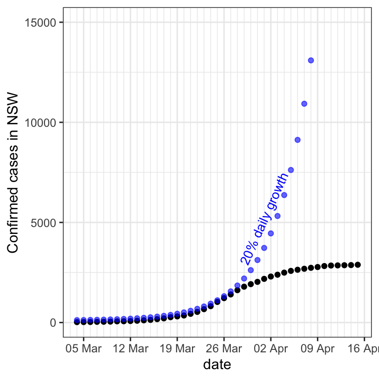
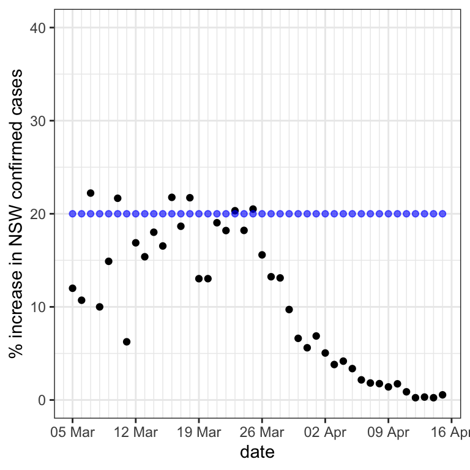
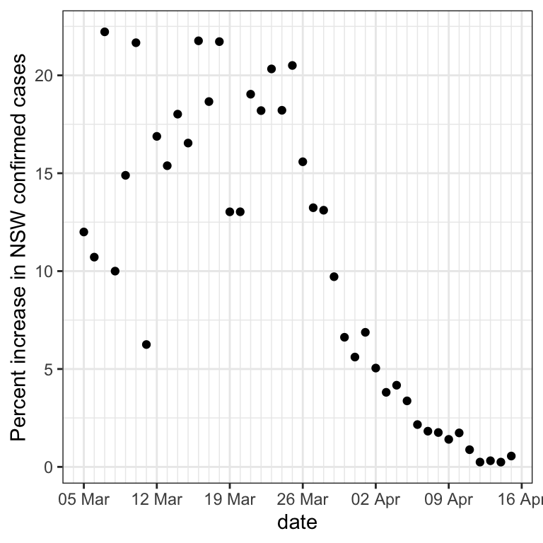
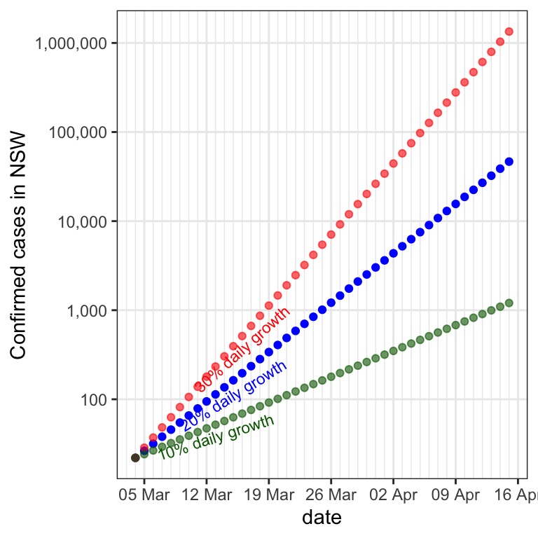
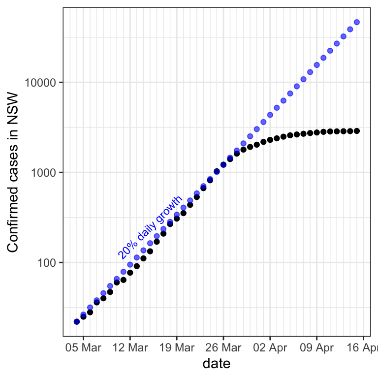

The following plot shows the number of confirmed cases of COVID-19 infection in the state of New South Wales in Australia, for each day during a period beginning the 4th of March, 2020.

Linear regression is often used to predict one variable based on another, but it assumes the overall shape of the data is a straight line (plus or minus some random variability).

The line that best fits the data is shown above in dark red. The fit is not good! The relationship between number of cases and days is nonlinear - they do not fall on a straight line.
Next, let’s consider the shape of the data more closely.

Below, some blue dots have been added to the plot. Also, the vertical axis has been rescaled to accommodate how high the blue dots go.

If the number of cases had increased by 20% each day, then the black dots (the real data) would fall exactly on top of the blue dots. In other words, the blue dots show the number of cases that would have occurred if there had been a 20% increase in cases each day.
For the blue dots, the increase in cases is greater for successive days. This is because 20% of a larger number is greater than that of a smaller number. For example, when 10 people are infected, a 20% increase means there will be 2 more cases the next day, yielding 12 cases in total. The second day will yield approximately 2 more cases, yielding 14. After a few days, 20% growth will yield 3 more cases. But as the total grows, 20% will correspond to more and more new daily cases. For example, 20% of 50 is 10 more cases.
As a result, the graph becomes steeper and steeper as the number of cases grows.
This is the classic pandemic nightmare, where a steady percentage increase causes a disease to quickly get out of control.
If the number of cases does grow by the same percentage each day, this is referred to as “exponential growth”. Each person infected may pass the infection on to a certain number of others.
This means that the change in a day’s cases reflects the number who are already infected, yielding a percentage increase each day rather than a constant increase in cases each day.
Near the beginning when only a few people are infected (here, early March), the number of cases remains pretty low, because a 20% increase does not mean a lot more cases.
Exponential growth
As was just described, “exponential growth” refers to when something increases by the same percentage over successive time points, such as a 20% increase per day.
We will now replot the previous data with the vertical axis as a percent increase over the previous day rather than the total number of cases we were using before.

Because the blue data points were created by calculating a 20% increase compared to the previous day, they are constant on this plot that uses % increase as the vertical axis.
For the real data (the black dots), this graph makes clear that after about 23 March 2020 (soon after flights from overseas were greatly reduced and social distancing began), no longer was there a similar percentage increase on each day. The percentage increase began to dwindle each day.
The below plot shows again, for each day, the percentage increase in cases from the previous day.

A logarithmic vertical axis
While the % increase vertical axis is useful, it unfortunately does not show the total number of cases. Instead, it only shows the change since the previous day. That means we can’t see how high the caseload has gotten. This is one reason that people often use a logarithmic vertical axis in situations of constant (or even approximate) percentage growth.
For the non-logarithmic vertical axis you are used to, a constant increase in number (not percentage) of cases each day results in a straight line. The greater the daily increase, the steeper the slope of the line. In other words, a constant daily addition results in a constant slope on a graph.
When growth is exponential, we are interested in knowing what the number of cases is being multiplied by each day, not how much is being added to it. In the case of 20% growth, for instance, on each day the number of cases is the previous number plus 20%, which can be calculated by multiplying the previous day’s number of cases by 1.2.
Logarithms turn multiplication into addition, which means that on a logarithmic axis, stepping upward by a constant amount does not mean the number of cases has increased by the same number each time, but rather that it’s been multiplied by the same number each time.

Our 20% growth points now fall on a straight line, because each successive point is a result of multiplying (rather than adding) by a constant, just like the vertical axis.
Indeed, notice that the vertical axis labels do not mark out equal intervals. That is, taking equal steps up does not result in adding one number over and over, a number corresponding to the step size. Rather, taking equal steps upward corresponds to multiplying by a number that reflects the step size. Notice the interval between the successive y-axis labels, for example - it is the previous label multipled by ten.

The above plot shows that with a logarithmic vertical axis, any daily growth rate (multiplication by a particular factor) results in a straight line of corresponding slope.
Notice how for the highest growth rate of 30%, the disease infects over 100,000 people in just five weeks! we are lucky that NSW
Plotting the actual data from NSW (black dots), thanks to the blue dots comparison, we can see that it was growing exponentially at nearly 20% for some time.
After 28 March, growth was slower - the data after that date no longer increase as steeply as the blue 20% growth dots.

Exponential growth of a disease is bad, but such growth of certain other things is not. Financial investments can yield exponential growth, because the value of many increases by some percentage yearly. For example, the U.S. stock market increased on average 14% a year between 2000 and the end of 2019. If your parents had invested $2000 for you in the year 2000, at the beginning of 2020 it would have been worth about $27,000.

One way to summarise what a particular growth rate means is to consider that each growth rate corresponds to a doubling every time a particular number of days elapses. The 14% growth rate of the stock market during the first twenty years of this century, for example, meant a doubling approximately every five years. Here I’ve labelled the 10, 20, and 30 percent growths with their doubling times.

Another way to think about a logarithmic axis is that going up a particular distance corresponds to multiplying by a particular factor.
Population density and flu mortality
Hoffman & Cox collected data regarding the flu pandemic that swept the world in 1918. Their plot, below, shows the mortality rate against the population density, with one data point for each county in Kansas and Missouri.

Not only is the vertical axis logarithmic on this plot, but also the horizontal axis is logarithmic. But you don’t need to worry about that to answer the following.
Causation
From correlations, people often draw conclusions regarding causal relationships between the variables involved - in this case, between the population density and the mortality rate.
Inferring causation
The causal inference people tend to draw from a positive correlation of X with Y is that X causes Y. In this case, that would be that a dense population causes higher flu mortality.
The correlation of Y with X and X with Y are the same. This means there is no mathematical reason to conclude that X causes Y rather than that Y causes X.
However, in cases such as this one, a causal link is more plausible in one direction than in another. For example, it is plausible that higher population density causes a higher rate of flu deaths. A more detailed causal model might be that population density causes more frequent physical contact between people, which causes flu transmission, which results in deaths.
But could Y cause X? That is, could flu deaths cause higher population density? That’s not very plausible, illustrating that with some pairs of variables, causation in only one of the directions is likely.
Don’t forget that there is also the possibility that a third variable, Z, causes X and Y. For example, high-density places (cities) tend to grow up around natural transport hubs such as ports, rivers, or crossroads. If diseases tend to originate somewhere else, they will often start in a particular region with people arriving at an airport or train station, and have a greater chance to spread in the surrounding area before countermeasures are taken. Thus, the third variable of transport hubs may cause both the higher population density and the greater disease mortality.
Many points means more evidence
Ideally, a scatterplot will have lots of data points. If those points show a consistent pattern of Y increasing or decreasing with X, this provides a lot of evidence for a correlation, rather than the pattern being a result of random chance. It is a good idea to assess how strong a correlation is before considering whether it may be driven by a causal relationship.
A plot from the news media
This plot was produced by John Burn-Murdoch of the Financial Times.

Notice that it has a logarithmic vertical axis, so going up a particular distance corresponds to multiplying by a particular factor. One feature you haven’t seen before, perhaps, is that the axis labels are not at equal multiplicative intervals. They have been positioned at round numbers.
A doubling of cases every two days, as occurred in the U.S. for the first two weeks here, corresponds to a 41% daily growth rate.

Here is another version of the graphic. Someone on twitter has scrawled something on it.
Causal inference
Causal inference refers to using evidene to arrive at a conclusion about how things are causally related.
The person who scrawled on this figure is encouraging people to make the causal inference that wearing a mask reduces the spread of COVID-19 infection. Let’s consider how good the evidence is for this causal inference.
In order to be confident that a statistical correlation is present between two things, many data points are usually needed. After establishing a statistically significant correlation, some people make the further leap to a causal model.
But one should keep in mind the difficulties in inferring causation from correlation. In particular, any correlation between two variables X and Y could be a result of X causing Y, Y causing X, or a third factor causing both X and Y.
Here, the person who scrawled on the plot is suggesting that there is a correlation between whether people in a country wear masks and the number of COVID cases. Unfortunately, the person did not calculate the size of the correlation (e.g., r), but to be generous, let’s assume that there is a sizable correlation that is statistically significant.
The plot highlights that a difference betweeen the countries with lots of cases and those with fewer may be how much people there wear masks. It is critical, however to consider the other differences between these groups of countries. Countries differ in so many ways that there are bound to be such differences.
Any of the below factors are likely to differ somewhat between the two groups of countries, and contribute to a difference in COVID cases:
- Climate
- Handshaking customs
- Amount of COVID testing and tracing of contacts
- Responsiveness of population to government recommendations
- Existence of and severity of quarantine
Such factors are sometimes called “third variables” because they are in addition to the two variables (mask wearing and number of cases) that were focused on. Because third variables exist, it is highly premature to conclude from a plot like this that masks are the main cause of the difference between the two groups of countries.
Statistical techniques can help estimate the roles of different variables that might contribute to a correlation. Multivariate linear regression tells you what combination of a set of variables comes closest to duplicating the data. It assumes that each variable contributes additively, each with a different weighting. Multivariate linear regression is often referred to as “regression”, although there are also other kinds of regression.
The tweeter of this plot got a lot of responses to their posting of the scrawled-on plot. Here is one that points out some of the third variables that confound the comparison between the two sets of countries.
There are almost always many potentially-relevant differences between countries, from genetic to cultural to environmental and governmental. As a result, the most likely explanation for the lower infection growth rate of the blue-circled countries is a combination of causes, one of which may be masks.
Someone else had a more creative explanation of the differences between the two groups of countries:
This graphic seems to suggest that ingestion of bubble tea stops the virus!
That is unlikely. But the person’s point is that there are typically many differences between two groups of countries, only some of which you are likely to think of at first.
Here is another response from twitter:
Dario claims that in addition to the blue-circled countries, Italians have also been wearing masks a lot, yet their infection rate has not slowed. Others have pointed out that people in China also began wearing masks at a high rate, yet their infection rate did not slow until much later.
Such suggestions highlight the fact that you should be skeptical of the claims of a random person on the internet, even if their claim comports with your intuition.
Another thing that people assume when they see a graph is that numbers plotted on the same axis all mean the same thing. But can the count of cases from one country really be compared so directly to that of another country?
As Christophe Toukam implies above, countries vary in their testing policies. Moreover, these testing policies change over time, which can contribute to different growth rates for different countries.
A fourth response to the scrawled-on plot, below, does not argue with the claim. Rather, it asserts that there is independent reason to believe the claim that masks slow infection:

Although the scrawled-on plot by itself provides only very weak evidence that masks are effective, reasons to believe a claim may also come from other places.
During an exponentially-growing pandemic, one doesn’t have time to wait for strong evidence. Wearing masks is a plausible cause of reduced transmission, so it may be a good policy to adopt even when empirical evidence for its effectiveness is weak.
You have reached the end! Please follow the guidelines of the health authorities in your area.